Getting Started
An overview of how to download and setup Angle, and more.
An overview of how to download and setup Angle, and more.
Thank you for buying Angle Wordpress theme! Angle is an elegant, modern and unique wordpress theme and we have spent a very long time developing it from scratch. It is packed with awesome features and its main focus is to make your web pages stand out, while keeping it extremely easy to use and maintain.
Feel free to contact us and give us your feedback about the theme, improvements you feel it needs and the documentation of the theme. We've worked hard to create Angle and we'll work even harder to support and improve it.
On behalf of Oxygenna team thanks again for buying Angle.
Once you have downloaded the zip file from Themeforest, unzip it using your standard zip software.
When it has finished you should have a folder with the following files & directories inside.
| Folder | Contents |
|---|---|
| icons | Set of hi resolution flat icons |
| demo | Demo content data for import |
| documentation | contains theme's documentation |
| licensing | theme licence files |
| psds | all the themes layered PSD files for Adobe Photoshop |
| angle-theme-ver.zip | the wordpress theme zip file ( for installation into WordPress ) |
| angle-child-theme-ver.zip | the wordpress Child theme zip file |
There are two ways to install Angle theme.
We have provided a Child theme in case you want to modify the theme while keeping it up to date. The child theme is included within the main download folder. To use the child theme upload it as the standard theme and then activate it in Appearance > Themes from the WordPress menu.
Before you install the theme, make sure you have installed wordpress version 3.4 or higher. You also need to have PHP 5.2.4 or higher and MySQL 5.0 in order for the theme to function correctly. There are two ways to install, select a method from the accordion on the right.
Take a look at the video on how to install Angle: getting started
Now that you have installed and activated Angle, you will see a notice at the top of the wordpress admin screen. This notice is to let you know about the plugins that we recommend you install for use with the theme. Click 'Begin installing plugins' and install/activate the plugins one by one. You can also access this page by going to Appearance > Install Plugins.
Take a look at the video on how to install and activate the plugins: Installing plugins
To get started quickly, once you have installed the theme you can install our demo content. This will make your site look exactly the same as the Angle demo site. Using the demo content, you can customize all the pages to your own needs.
You can import the demo data from the demo.xml file found in the demo folder.
If importing the demo fails, it will likely be due to your server settings, which will be limiting the import. In case that happens, we have provided an XML file without the media included, which should import the demo without any problems. You can find this file within the "/demo" folder, named "demo-simple.xml".
Take a look at the video on how to import the demo content: importing the demo content
If you have any issues with the import, i.e. any errors, then you'll likely need to increase the memory limit. Here's a guide of how to proceed :
define('WP_MEMORY_LIMIT', '64M');memory_limit = 64Mphp_value memory_limit 64M
Take a look at the recommenced PHP settings
| Option Group | Variable | Description | Value |
|---|---|---|---|
| Resource Limits | max_execution_time | Maximum execution time of each script, in seconds. | 600 |
| Resource Limits | max_input_time | Maximum amount of time each script may spend parsing request data | 600 |
| Resource Limits | memory_limit | Maximum amount of memory a script may consume. | 128M |
| File Uploads | upload_max_filesize | Maximum allowed size of uploaded files. | 200M |
Angle comes bundled with Revolution Slider plug-in. You can use the slider as appears on the demo site or create a brand new for your website.
To import the revolution slider content that appears on the demo site import the home.zip file found in demo folder.
To setup your logo, go to Angle>General settings. The options here allow you to configure the logo type of the site. As a logo you can use text, image or both. 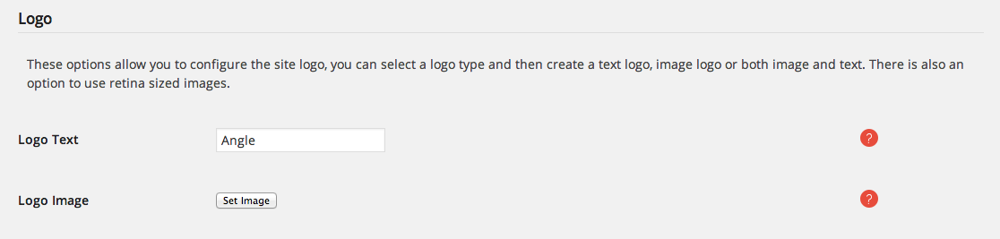
The logo image size will always be restricted by the height of the header (see next section). To make sure that your logo will look crisp on retina screens, make sure that the height of the image you upload is at least 1.5 times bigger than the header's height.
To set up your page header you have the following options 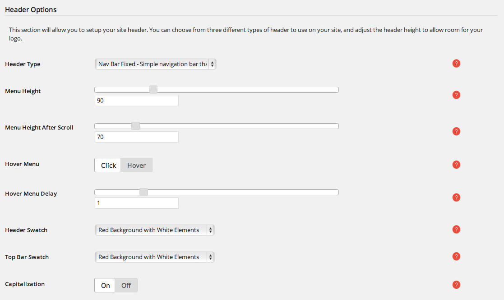
Options 2 and 3 uses an extra top bar with two widget positions.
To set up a main menu on Angle theme (assuming you have created a menu or imported the demo content) click on Appearance>Menus. Select your main menu from the drop down list.
To add an icon next to a menu item follow these steps.
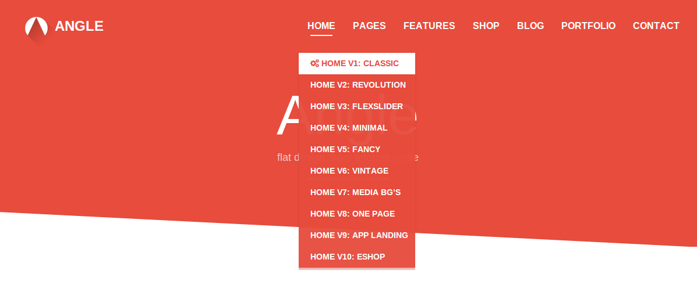
To add a separator between menu items follow these steps.
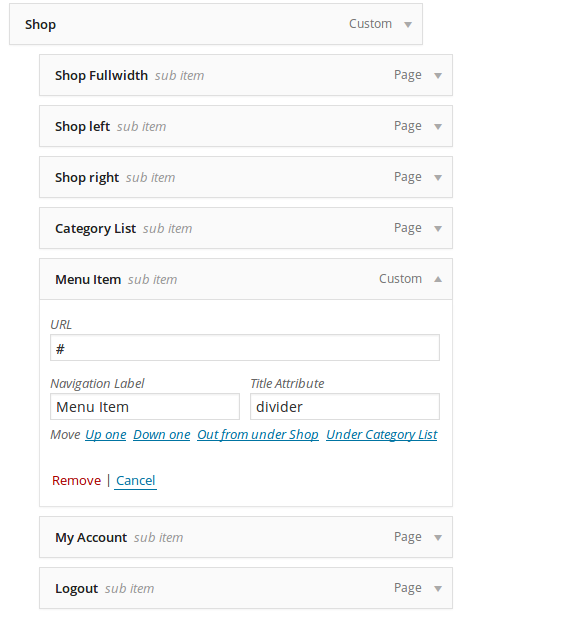
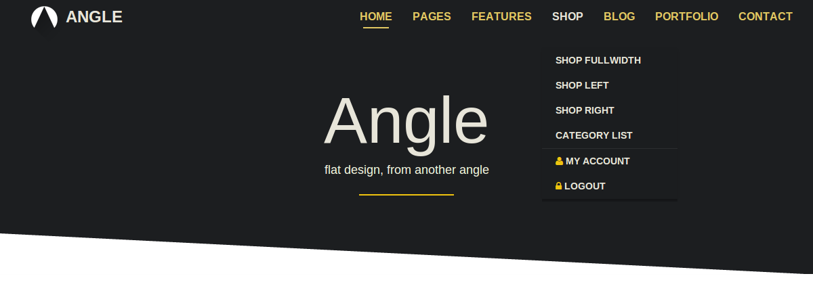
Angle supports both fullscreen and boxed layout. 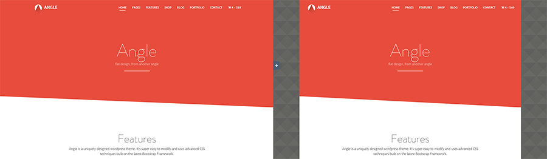
To set up the layout go to Angle>General and select normal or boxed in the layout option section.
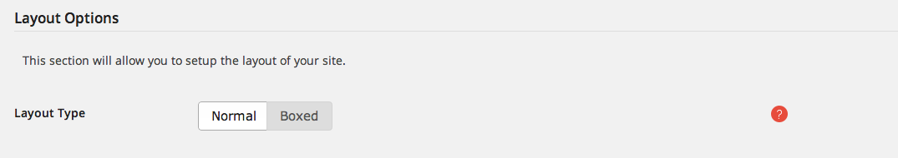
To set up the background used in the boxed version go to Appearence>Background
Take a look at the video on how to setup the theme's layout: setting the layout
In Angle theme you need to specify which page is going to be your home page. Assuming that you have created a page (or installed the demo content), follow these steps
To specify which page is going to be your blog post list page (assuming that you have created a blank page or installed the demo content) follow these steps
The settings for the blog page can be found on Angle>Blog
Take a look at the video on how to setup your blog and home pages: setting the home and blog pages
Angle comes with two footer areas that contains up to eight widget positions. The footer (at the bottom of the page) and the upper footer directly above the normal footer. To set up the theme’s footers, follow these simple steps.
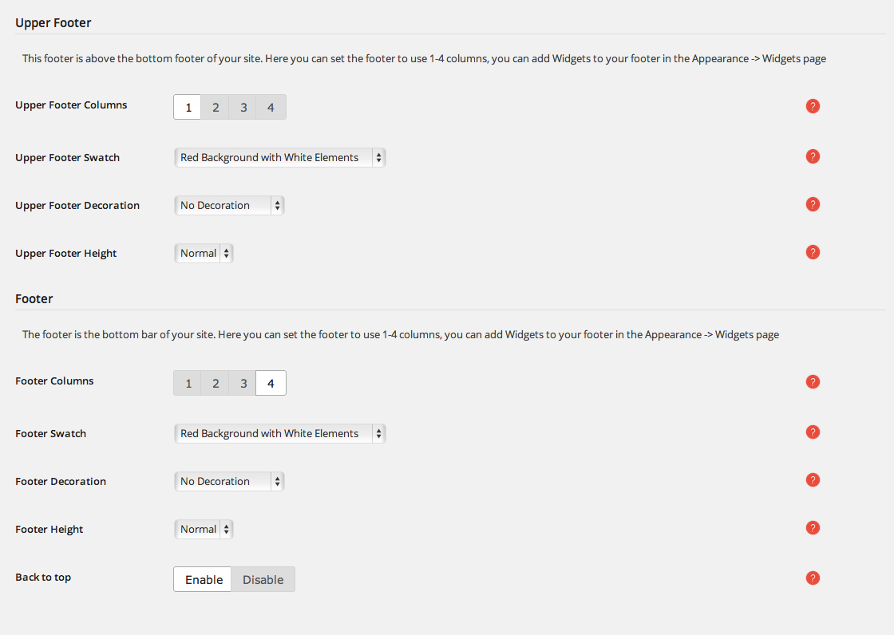
To learn more about Section decorations and Section heights go to Sections documentation.
Angle comes with a powerful typography engine that can help you set your typography as you want. With the option to use any google or typekit font you like you have unlimited options. To set up your typography, you first need to import your fonts:
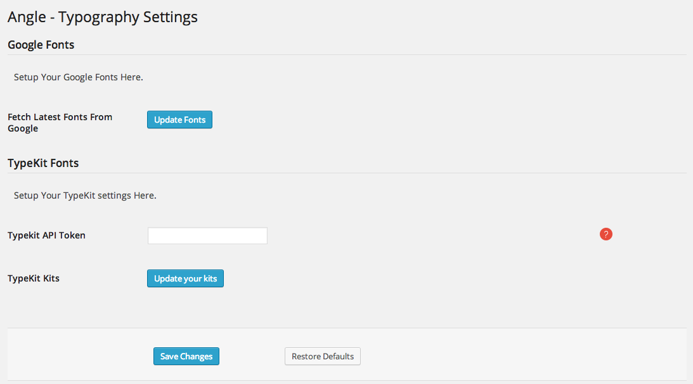
After saving your font lists, you can go ahead and select the fonts you want in your website.
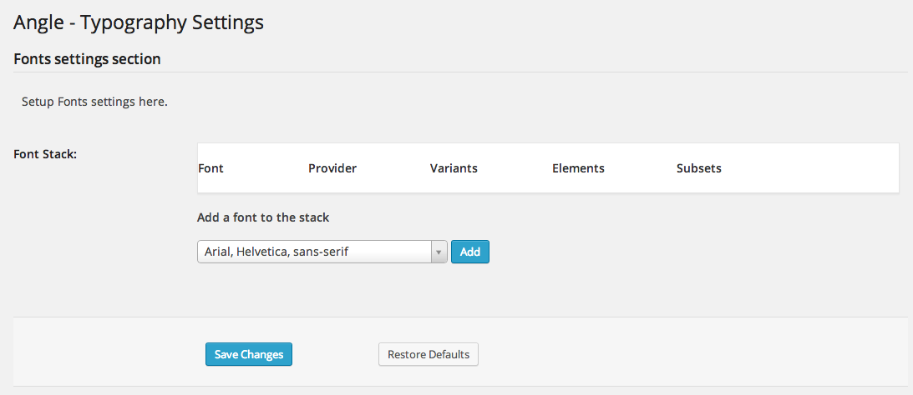
You can repeat the last few steps to add as many fonts you want to your web page.
Take a look at the video on how to setup your typography: setting the typography
Important Notice. In order for all the font weights to be applied correctly, it is a prerequisite that the font you are using supports the chosen font weight. In addition, when adding fonts you need to associate the font weight classes (.light and .hairline) with the appropriate weights that the font family supports.
For example use the following code for the Lato Google Font:
.light {
font-weight: 300 !important;
}
.hairline {
font-weight: 100 !important;
}
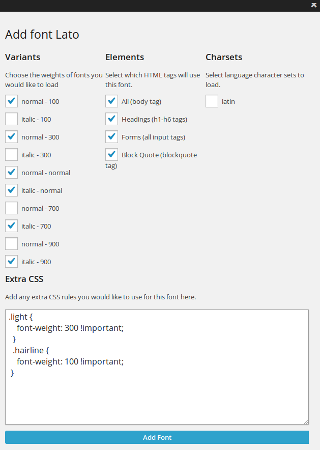
Find out about Lato Google Font here: Lato Google Font
In Angle theme you can set permalinks for all the custom post types, like the services, the staff members and the portfolios. To setup the permalinks, follow these steps
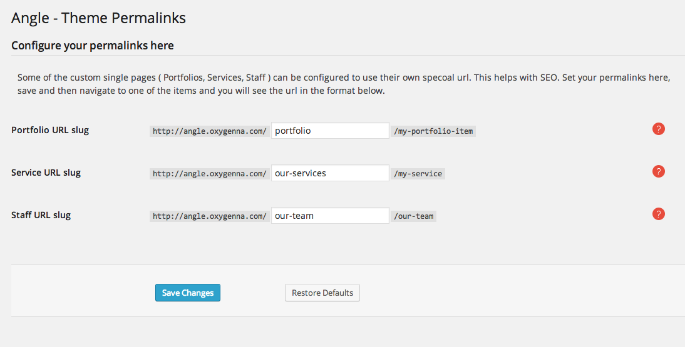